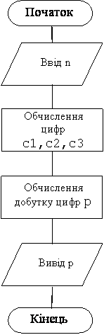

.
Назад
Вперед
Зміст
Задачі на цілочисельне ділення
Приклад 1
Дано кількість днів. Скільки це буде тижнів та днів? Екран, повинен мати вигляд:
Введіть кількість днів–> 20
20 днів це 2 тижня та 6 днів
Дано: кількість днів.
Знайти: кількість тижнів, кількість днів, що залишилось
Змінні:
Вхіднi:
Вихідні:
- n – кількість тижнів
- d– кількість днів, що залишилось
Операції цілочисельного ділення використовуються тільки для цілих чисел, тому всі вхідні та вихідні дані цілого типу.
Результат роботи програми
| Ввід | Відповідь |
|---|
| 20 | 20 днів це 2 тижня та 6 днів |
Алгоритм
- Ввід dn – кількість днів. Перед вводом виводиться пояснення, що потрібно вводити;
- Обчислення значення n.
- Обчислення значення d.
- Вивід обчислених значень d,n. Перед виводом значення виводиться пояснення, що виводиться.
Программа
Var d,n,dn:byte;
Begin
write(' Введіть кількість днів –> ');read(dn);
d:=dn mod 7; n:= dn div 7;
Writeln(dn,' днів це ',n,' тижня та ',d,' днів');
end.
|
Приклад 2
Дано натуральне трьохзначне число. Знайти добуток його цифр. Екран, повинен мати вигляд:
Введіть число: 345
3*4*5=60
Дано: натуральне трьохзначне число
Знайти: добуток його цифр
Змінні:
Вхіднi:
Вихідні:
Проміжні:
- c1– перша цифра
- с2 – друга цифра
- с3 – остання цифра
Операції цілочисельного ділення використовуються тільки для цілих чисел, тому всі вхідні та вихідні дані цілого типу.
Результат роботи програми
| Ввід | Відповідь |
|---|
| 345 | 3*4*5=60 |
Алгоритм
- Ввід числа n. Перед вводом виводиться пояснення, що потрібно вводити;
- Обчислення c1,c2,c3 цифр числа n.
- Обчислення значення p.
- Вивід обчисленого значення p. Перед виводом значення, виводяться цифри числа, знаки множення, та знак дорівнює
Блок-схема програми
Кожен блок відповідає одному чи декільком операторам. Блоки виконуються в напряму ліній.

Программа
Var n,c1,c2,c3,p:integer;
Begin
write(' Введіть число: ');read(n);
c1:=n div 100;c2:=n div 10 mod 10; c3:=n mod 10;
p:=c1*c2*c3;
Writeln(c1,’*’,c2,’*’,c3,’=’,p);
end.
|
Варіанти задач
- Складіть програму обчислення суми цифр цілого двохзначного числа. Екран, повинен мати вигляд:
Введіть двохзначне число: 34
3+4=7
- Складіть програму обчислення квадрату суми цифр цілого двохзначного числа. Екран, повинен мати вигляд:
Введіть двохзначне число: 34
3+4 у квадраті =49
- Складіть програму обчислення суми цифр цілого трьохзначного числа. Екран, повинен мати вигляд:
Введіть трьохзначне число: 345
3+4+5=12
- Складіть програму обчислення суми квадратів цифр цілого трьохзначного числа. Екран, повинен мати вигляд:
Введіть трьохзначне число:345
9+16+25=50
- Складіть програму обчислення добутку другої та третьої цифр цілого чотирьохзначного числа. Екран, повинен мати вигляд:
Введіть чотирьохзначне число: 3456
4х5=20
- Складіть програму обчислення добутку цифр цілого чотирьохзначного числа. Екран, повинен мати вигляд:
Введіть чотирьохзначне число: 3545
3х5х4х5=300
- Складіть програму обчислення передостанньої цифри цілого числа з кількістю цифр >=2. Екран, повинен мати вигляд:
Введіть число: 3456
Передостання цифра числа 3456 це 5.
- Дано ціле чотирьохзначне число. Знайдіть суму кубів цифр цього числа. Екран, повинен мати вигляд:
Введіть число: 3456
27+64+125+216=432
- Складіть програму переводу суми грошей з копійок у гривні та копійки. Екран, повинен мати вигляд:
Введіть суму у копійках –> 2360
2360 коп. це 23 руб. 60 коп.
- Складіть програму переводу часу у хвилинах у години та хвилини. Екран, повинен мати вигляд:
Введіть час (хв) –> 150
150 хв це 2 г. 30 хв.
- Складіть програму переводу часу у секундах у години, хвилини та секунди. Екран, повинен мати вигляд:
Введіть ісходні дані:
Час (сек) –> 19520
19520 сек це 5 годин 25 хвилин 20 секунд
- Дано натуральне число n. Якою найменшою кількістю монет можна виплатити n копійок? Припустимо, що в достатній кількості є монети 1, 5, 10 и 20 копійок. Екран, повинен мати вигляд:
Введіть ісходні дані:
Сума (коп) –> 79
По 20 коп – 3 шт
По 10 коп – 1 шт
По 5 коп – 1 шт
По 1 коп – 4 шт
- Дано ціле двохзначне число. Помножте на 10 число, яке утворюється якщо виписати цифри першого числа у зворотному порядку. Екран, повинен мати вигляд:
Введіть число: 93
39*10=390
- Дано ціле трьохзначне число. Додайте одиницю до числа, яке утворюється якщо виписати цифри першого числа у зворотному порядку. Екран, повинен мати вигляд:
Введіть число: 345
543+1=544
- Дано ціле чотирьохзначне число. Помножте на два число яке утворюється якщо виписати цифри першого числа у зворотному порядку. Екран, повинен мати вигляд:
Введіть число: 3456
6543х2=13086
- Нехай у не високосному році 1 січня понеділок. Нехай k порядковий номер дня з початку року (1<=k<=365). Складіть програму, яка визначає по цьому числу який це буде день тижня (1–7). Екран, повинен мати вигляд:
Введіть ісходні дані:
Порядковий номер дня з початку року –> 14
Порядковий номер дня у тижні– 7
- Нехай у будинку k поверхів та m квартир на поверсі. Дано R номер квартири. З’ясуйте на якому вона поверсі та у який парадній. Екран, повинен мати вигляд:
Введіть ісходні дані:
Кількість поверхів у домі –> 4
Кількість квартир на поверсі–> 4
Номер квартири –> 17
Квартира 17 в 2 под'їзді на 1 поверсі
Назад
Вперед
Зміст